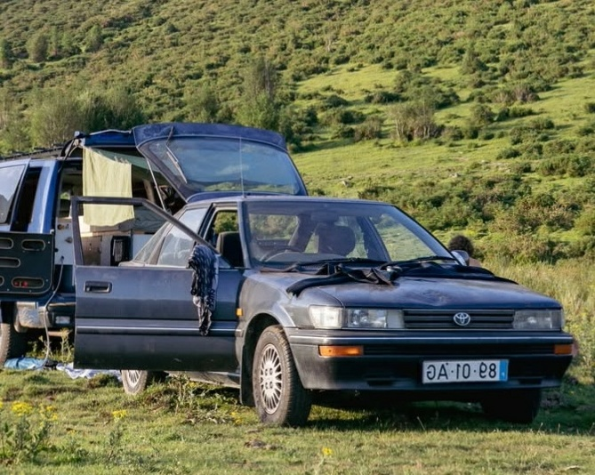
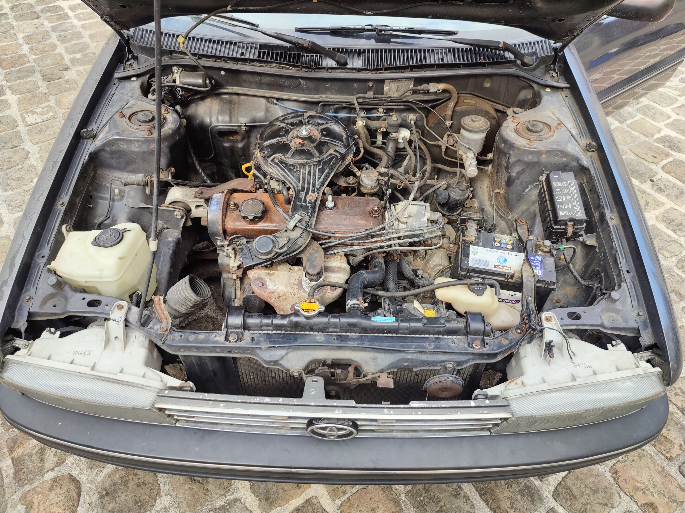

L'histoire de la voiture
Cette Toyota Corolla date de 1992. Elle a appartenu pendant 33 ans à un Portugais (d'où la plaque), avant d'être cédée à un Australien venu faire un road trip en Europe.
Cet Australien est un ami qui m'a proposé de venir récupérer la voiture à Munich en plein milieu des vacances d'été 2025, car il ne pouvait pas la ramener en Australie et voulait la céder à quelqu'un qui la restaurerait.
J'ai donc ramené la voiture de Munich à Châlons-en-Champagne pour pouvoir travailler dessus cette année.

L'objectif
Le but de cette année est de restaurer mécaniquement et esthétiquement cette voiture pour acquerir des compétences et m'amuser avec mes amis.
Mécaniquement, la voiture est solide mais présente quand même certains défaults, comme un parallélisme approximatif. Elle a parfois aussi du mal à démarrer et cale au ralenti, ce qui peut être dû au carburateur et à la batterie. J'ai aussi l'impression que les 75 chevaux du moteur 2E ne sont pas completement présents.
Esthétiquement, la voiture présente beaucoup de rouille car elle a été stockée en bord de mer. Il faudra d'enlever cette rouille en soudant du métal à la place des points de rouille, ou en appliquant un produit transformateur de rouille si ce n'est pas possible. L'objectif est de la peindre en blanc et de changer le toit ouvrant pour qu'elle ressemble à celle sur la photo de droite.


Ce qui a été fait:
-Le certificat de conformité européen
-Le quitus fiscal
-La carte grise française
-Le test des compressions des différents cylindres
-La vidange et le remplacement du liquide de refroidissement
-Le dérouillage des maintients du radiateur par electrolyse
Ce qu'il reste à faire:
-Le parallelisme
-Trouver une baguette de calandre
-Réparer le compteur de vitesse
-Remplacer le toit ouvrant
-Le changement de la batterie
-Le remplacement des pneus
-La restauration du carburateur
-Le nettoyage complet de l'intérieur et de la baie moteur
-La restauration de l'admission d'air
-La suppression de la rouille sur la carosserie et le moteur
-Le remplacement de la poignée de porte droite arrière
-Le redressement du pare-choc arrière
-Le redressement des différentes bosses sur la carosserie
-La restauration du capot
-Le nettoyage des phares
La restauration des baguettes en mauvais état
-La peinture des supports d'essuie-glace et des rétroviseurs
-La peinture de la carosserie
-Le changement des ampoules ne fonctionnant plus